Chrome DevTools Implementation Report
This report documents the practical Chrome DevTools examples added to the Project 2 copy. The app now includes console logging demos, browser-error reproducers, message filtering examples, breakpoint-friendly code paths, and a safe fix flow after reproducing the bug.
Implemented Areas
- Message logging with
console.info,console.warn,console.error,console.table,console.group, and styled console output. - Browser message examples for a 404 fetch error, a TypeError, and a long-running operation.
- Filtering examples for text, regular expressions, message source tags, and user-generated messages.
- Debugging examples for breakpoints, variable inspection, watch expressions, pause on exception, step-through practice, and a fixed version of the bug.
Key Files
index.htmladds the DevTools demo buttons.script.tscontains the new console and debugging examples.script.jsis the compiled bundle used by the browser.assets/DEVTOOLS_GUIDE.htmland the screenshots folder support the written report.
Figure 1. Main App Overview
The copied Project 2 page now exposes the DevTools demo buttons directly in the UI. This is the launch point for the logging, filtering, and debugging workflows described in the assignment.
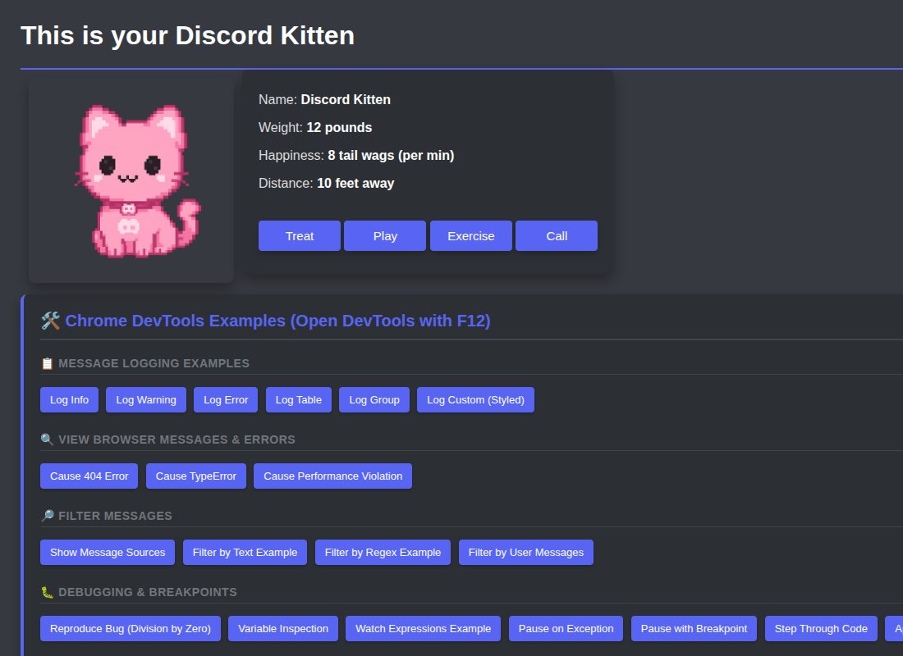
Figure 2. Filtering Guide
The guide section explains how to filter console messages by text, regular expression, source tag, and user-message type. This matches the new console output added in script.ts.

Figure 3. Debugging and Breakpoints Guide
The debugging section covers line breakpoints, variable inspection, watch expressions, pause on exception, and stepping through code. The app includes dedicated functions for each of those flows, including a debugger-statement pause and a fixed division path.

Figure 4. Logging Workflow Reference
This guide view shows the logging area that corresponds to the console info, warning, error, table, group, and custom-style examples in the app.
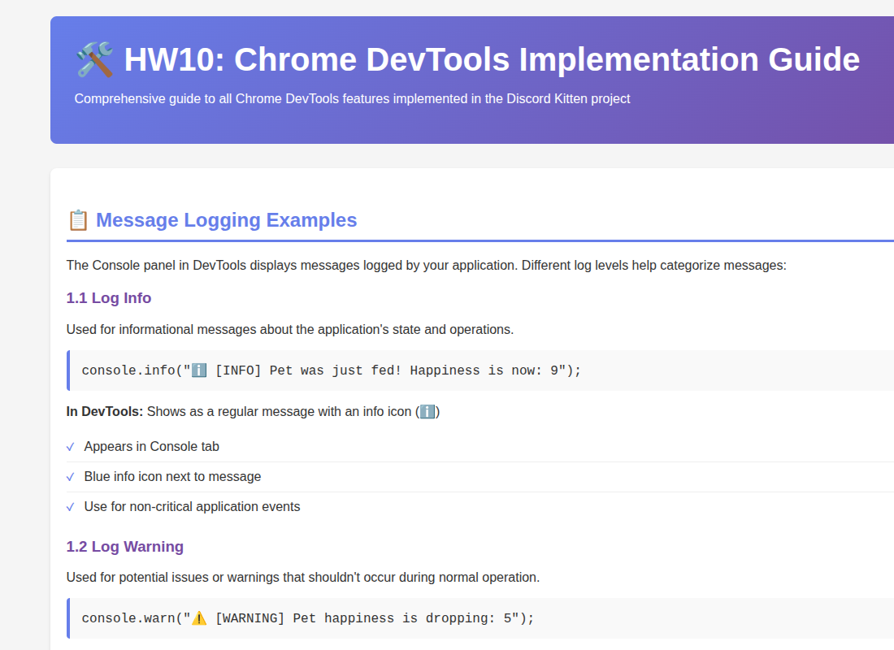
Figure 5. Console Logging Reference
The next guide section reinforces the browser logging flows and how they appear in the Console tab when the demo buttons are clicked.
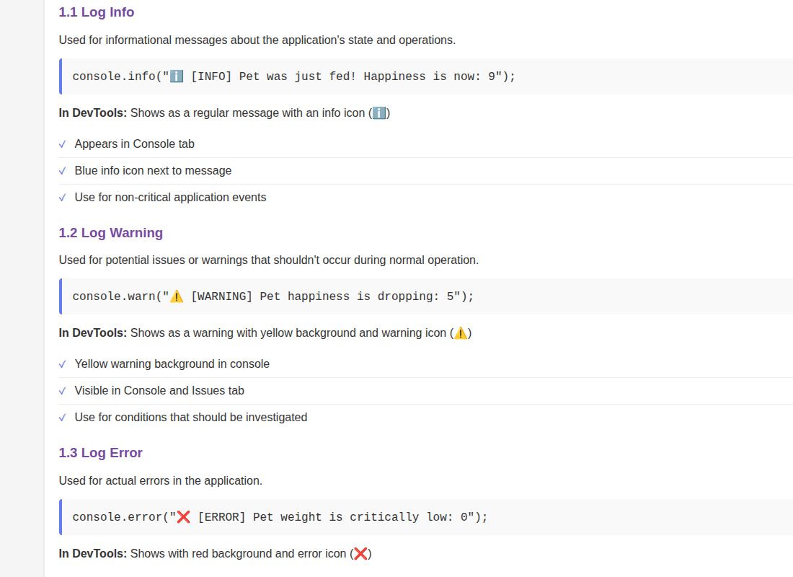
Figure 6. Network Error Reference
This guide section describes the 404 network request scenario and the browser-generated message flow that appears after triggering the missing image fetch.
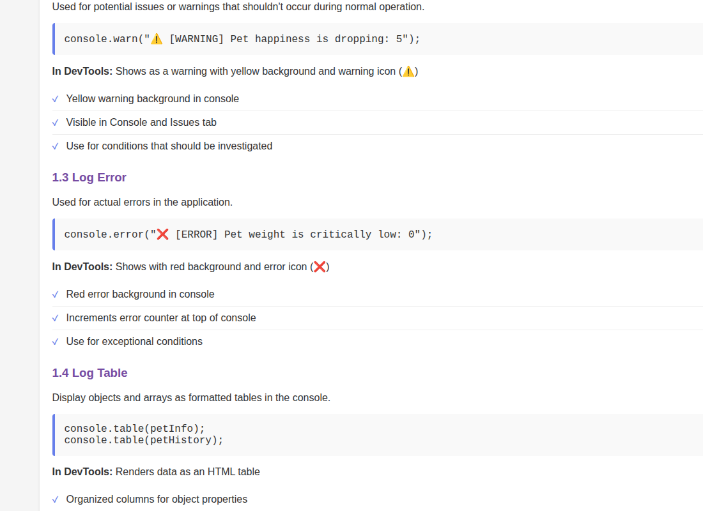
Figure 7. TypeError Reference
The TypeError workflow is documented here so the console stack trace can be compared with the app's intentional invalid-property access example.
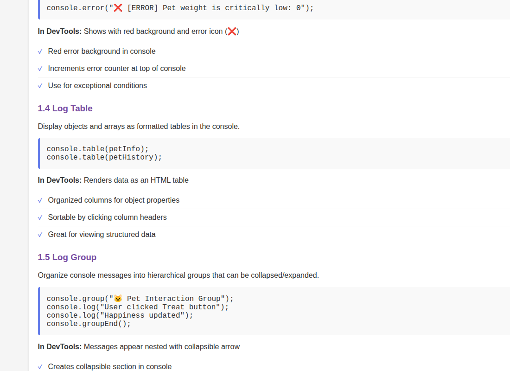
Figure 8. Performance Violation Reference
The performance section explains the long-running operation demo and the record/stop workflow in the Performance panel.
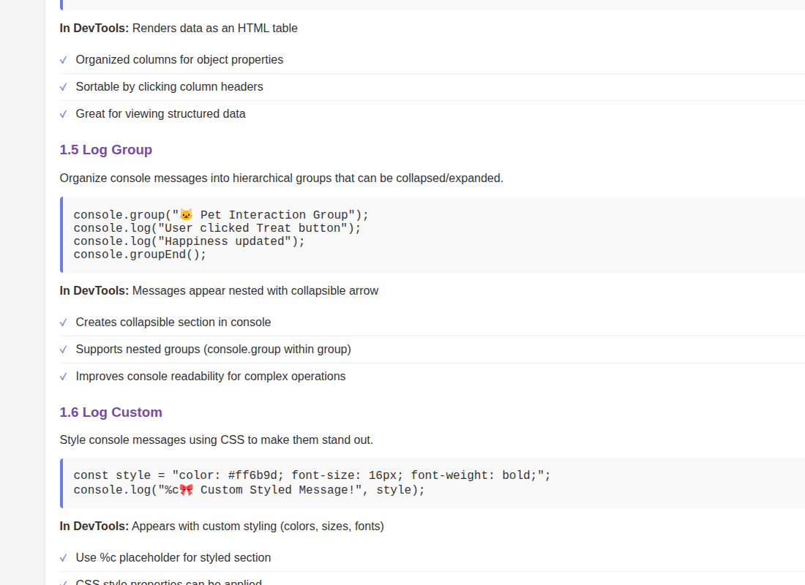
Figure 9. Text Filtering Reference
This view shows the filtering guidance that matches the app's source-tagged and text-filterable console messages.
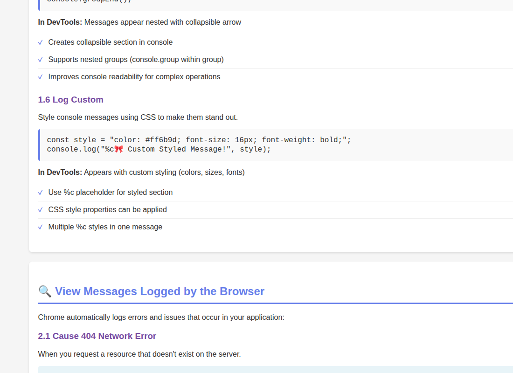
Figure 10. Regex Filtering Reference
The regex guidance lines up with the bracketed messages emitted by the new filter-by-regex demo in the app.
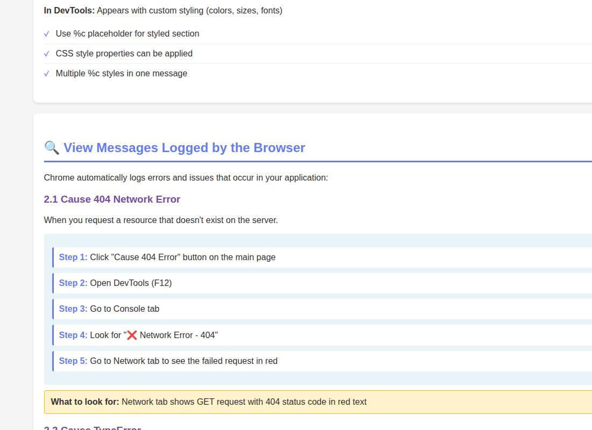
Figure 11. Message Source Reference
This screenshot anchors the source-tag filtering section, which is why the app prints messages like [PET-CONTROLLER] and [UI-RENDERER].
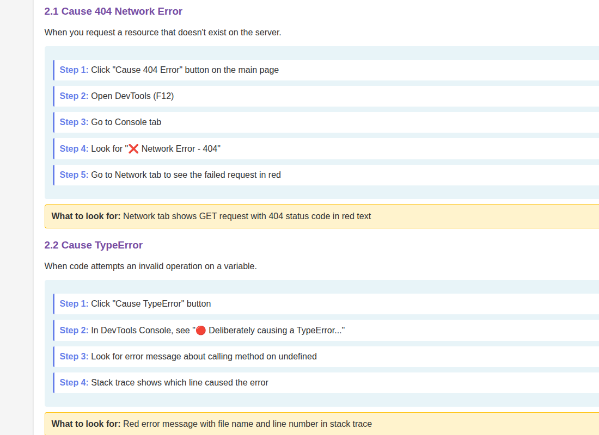
Figure 12. Breakpoint Setup Reference
This guide view is used to explain how to set a line-of-code breakpoint before triggering the variable-inspection and pause examples.
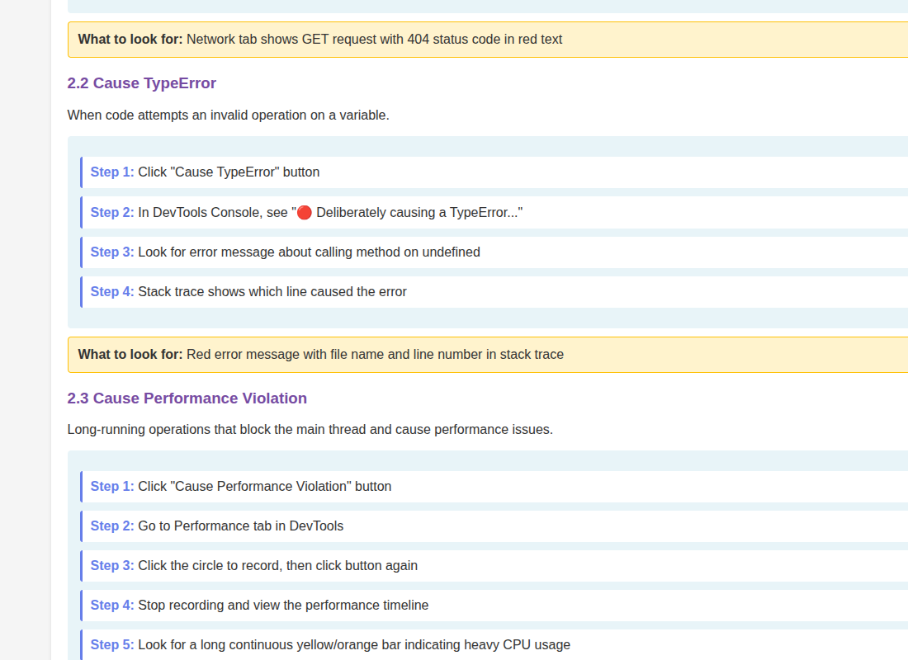
Figure 13. Scope Pane Reference
The scope-pane instructions explain where local variables appear while paused in Sources, matching the app's inspection-friendly function bodies.
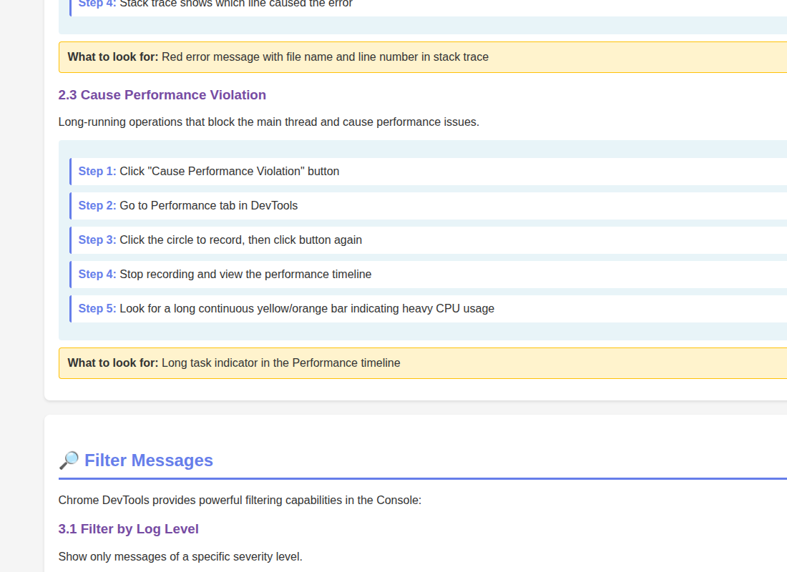
Figure 14. Watch Expressions Reference
This guide screenshot explains the watch-expression panel and how to track values while stepping through the debugging examples.
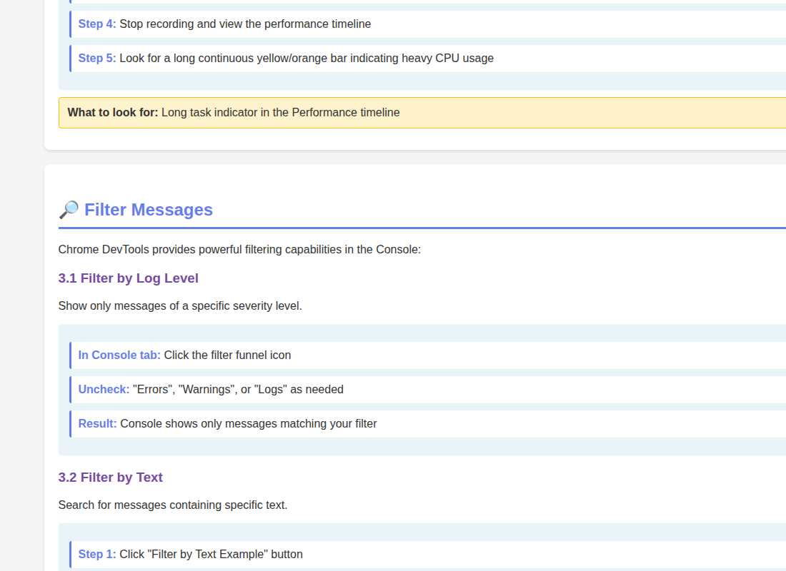
Figure 15. App Overview Reference
The final capture closes the loop with the app itself, showing the DevTools demo controls that map to the guide sections throughout the report.

Summary
The project copy now serves as a practical DevTools exercise page and the PDF now includes the complete 15-figure screenshot sequence required by the assignment. It gives a clear path for reproducing a bug, inspecting execution state in Sources, and then applying the fix with the corrected division logic in the app.